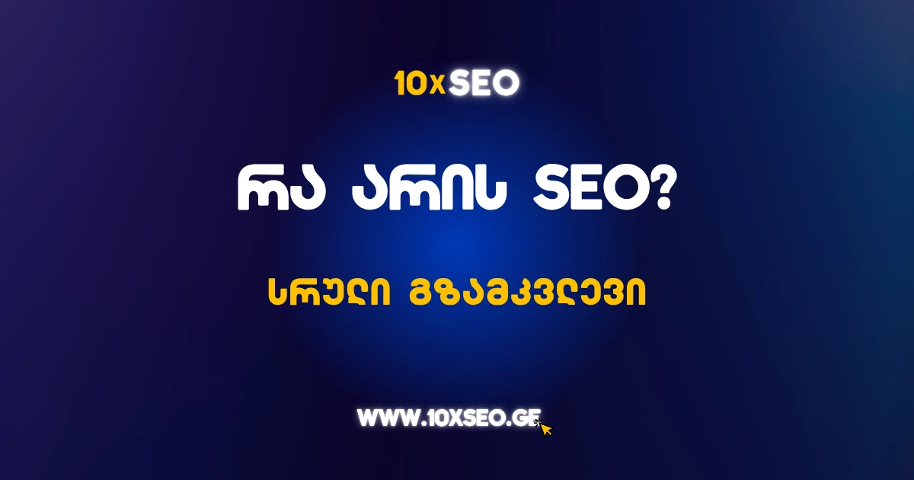

სარჩევი
ტექნოლოგიური განვითარება და ჩვენი ცხოვრების უდიდესი ნაწილის ონლაინში გადასვლა, ცხადია, ბიზნესის მიდგომებზეც აისახება. ტრადიციული მარკეტინგი გაყიდვებისთვის აღარ არის საკმარისი და საჭირო ხდება, ბიზნესიც მაქსიმალურად გაფიცრულდეს.
ალბათ წარმოუდგენელიც კია, 2025 წელს ზრდაზე ორიენტირებულ ბიზნესს არ ჰქონდეს ვებგვერდი და მომხმარებლებს არ ეძლეოდეთ საშუალება, შენაძენი წინასწარ "შეათვალიერონ". თუმცა, ციფრულ სივრცეში წარმატება არც ისეთი მარტივია და გაციფრულებაც მხოლოდ ვებგვერდისა თუ აპლიკაციის შექმნით ვერ შემოიფარგლება. თანამედროვე მომხმარებელი ყველაფერს ონლაინ ეძებს – იქნება ეს სამედიცინო კვლევა, საჩუქარი მეგობრისთვის, საცხოვრებელი ბინა თუ ავტოდაზღვევა. ამიტომაც, წარმატებას აღწევს ის ბიზნესი, რომელიც ციფრულ სივრცეში უფრო შემჩნევადი, მარტივად საპოვნელია. სწორედ ამაში გვეხმარება SEO ოპტიმიზაცია (Search Engine Optimization) – ეს არის საძიებოს სისტემის ოპტიმიზაცია, რომელიც ეხმარება თვითონ საძიებო სისტემებს, გაიცნონ თქვენი ვებსაიტი, მეტი გაიგონ მისი შინაარსის შესახებ და შესაბამის დროს დააკავშირონ იგი მომხმარებლებთან – მარტივად რომ ვთქვათ, დაგუგვლის შემდეგ მომხმარებელს სწორედ თქვენი ვებგვერდი შესთავაზონ.
SEO-ის მიზანია, საძიებო სისტემის შედეგების გვერდებზე (SERPs) პირველი გვერდის პოზიციებზე ყოფნა ყველაზე შესაბამის და ღირებულ საკვანძო სიტყვებზე, რომლებიც თქვენი მიზნობრივი აუდიტორიისთვის მნიშვნელოვანია, რაც უზრუნველყოფს მიზნობრივი ტრაფიკის მოზიდვას თქვენს საიტზე. მაგალითად, თუკი გაქვთ სალონი, ხომ გენდომებათ გუგლში თმის შეჭრის ან სპა-პროცედურის ძიების შემდეგ მომხმარებელი თქვენს ვებგვერდზე გადმოდიოდეს – ამისთვის კი საძიებო სისტემის პირველ გვერდზე, მოწინავე პოზიციებზე უნდა იყოთ.
SEO ოპტიმიზაცია ითვლება ციფრული მარკეტინგის ერთერთ საუკეთესო პრაქტიკად და შეიძლება გამოყენებულ იქნას ნებისმიერ ვებსაიტზე. ის ეხმარება საიტებს, გაუმჯობესდეს მათი ხილვადობა საძიებო სისტემებში, როგორიცაა Google და Microsoft Bing. იქნება ეს პროდუქციის პოპულარიზაცია, სერვისების შეთავაზება თუ კონკრეტულ თემაზე ექსპერტული ცოდნის გაზიარება — SEO დაგეხმარებათ ტრაფიკის გაზრდასა და ონლაინ ხილვადობის გაუმჯობესებაში.
ტექნოლოგია მუდმივად ვითარდება, რაც ნიშნავს, რომ ვებსაიტებიც — და მათი სტრუქტურაც — იცვლება. ასევე იცვლება მოწყობილობებიც, რომლებსაც საძიებო სისტემებზე წვდომისთვის ვიყენებთ. რაც უკეთესი ხილვადობა ექნება თქვენს გვერდებს საძიებო შედეგებში ნებისმიერი მოწყობილობიდან, მით უფრო გაიზრდება შანსი, რომ მომხმარებლები გიპოვიან და პროდუქტს შეიძენენ. ეს ერთგვარი გზამკვლევი კი უფრო დეტალურად აგიხსნით, რა არის SEO და რა ტენდენციებს აერთიანებს ის 2025 წელს.
5 მიზეზი, რატომ უნდა ჩადო ინვესტიცია SEO-ში
YouTube-ზე ნახვა →რა არის SEO-ს, SEM-სა და PPC-ის შორის განსხვავება?
როდესაც საუბარი გვაქვს ციფრულ მარკეტინგზე, განსაკუთრებით საძიებო სისტემების მარკეტინგზე, სამი ძირითადი ტერმინი ჩნდება-ხოლმე: SEO, SEM და PPC. მათი მნიშვნელობისა და ფუნქციების ზუსტად გაგება გადამწყვეტია ეფექტური მარკეტინგული სტრატეგიის შემუშავებისთვის.
რას ნიშნავს თითოეული ეს ტერმინი?
SEO (Search Engine Optimization) — ეს არის ვებსაიტის ოპტიმიზაციის პროცესი, რომელიც ეხმარება საძიებო სისტემებს, როგორიცაა Google და Bing, უკეთ გაიგონ ვებსაიტის კონტენტი და აჩვენონ ის შესაბამისი საძიებო შეკითხვებისთვის. SEO მიზნად ისახავს ორგანული (ანუ არაგადასახდელი) ტრაფიკის მოზიდვას.
PPC (Pay-Per-Click) — ეს არის რეკლამირების მოდელი, რომელშიც კომპანიები იხდიან ყოველ ჯერზე, როცა ვინმე დააწკაპუნებს მათ რეკლამაზე. ყველაზე ცნობილი მაგალითია Google Ads, სადაც რეკლამები ფასიან ადგილებში ჩნდება საძიებო შედეგებში.
SEM (Search Engine Marketing) — ეს ტერმინი გულისხმობს საძიებო სისტემების მარკეტინგს ზოგადად. SEM მოიცავს როგორც SEO-ს, ასევე PPC-ს. ეს არის სტრატეგია, რომელიც აერთიანებს ორგანულ და ფასიან მიდგომებს ტრაფიკის მოსაზიდად.
წარმოიდგინეთ, რომ საძიებო სისტემების მარკეტინგი (SEM) არის მონეტა. ამ მონეტის ერთ მხარეს დევს SEO ოპტიმიზაცია – ორგანული ტრაფიკი, რომელიც თქვენს საიტზე მომხმარებლებს უფასოდ მოიზიდავს საძიებო სისტემებიდან. მეორე მხარეს კი არის PPC – რეკლამა, რომელზეც ყოველ დაწკაპუნებაზე იხდით.
იმის გასაგებად, თუ რით განსხვავდება ეს ტერმინები და პროცესები ერთმანეთისგან, მნიშვნელოვანია ვიცოდეთ, რომ, მაგალითად, SEO ეფუძნება კონტენტის ოპტიმიზაციას და ტექნიკურ გაუმჯობესებებს, რათა საიტი მაღალი პოზიციებით გამოჩნდეს Google-ის ორგანულ შედეგებში. PPC ეფუძნება რეკლამას – თქვენ იხდით, რომ გამოჩნდეთ პირველ გვერდზე კონკრეტული სიტყვებისთვის, და იხდით თითოეულ დაწკაპუნებაზე. SEM კი საბოლოო ჯამში ორივეს მოიცავს – ეს არის სტრატეგიული მიდგომა, რომელიც აერთიანებს SEO-საც და PPC-საც, რათა მაქსიმალურად გაზარდოს თქვენი ხილვადობა.
SEO თუ PPC – რომელი არხი ჯობია?
ბევრი მარკეტოლოგი დაობს იმაზე, თუ რომელი გზა გვაძლევს უკეთეს შედეგს: SEO თუ PPC. რეალურად, ორივეს აქვს თავისი ძლიერი მხარე. SEO ოპტიმიზაცია გაძლევთ სტაბილურ და ხანგრძლივ ტრაფიკს, თუმცა მას სჭირდება დრო და ტექნიკური შრომა. პარალელურად კი PPC იძლევა სწრაფ შედეგებს და შეგიძლიათ მიზანში ზუსტად მოხვდეთ კონკრეტული საკვანძო სიტყვებით, მაგრამ ეს დაკავშირებულია ხარჯებთან. საუკეთესო გამოსავალია ორივეს კომბინირება – თუ ბიუჯეტი გაძლევთ ამის საშუალებას.
რატომ არის SEO ასეთი მნიშვნელოვანი, განსაკუთრებით ქართულ რეალობაში?
დღევანდელი ციფრული სამყაროსთვის, სადაც თითქმის ყოველი მომხმარებელი მობილურს ან კომპიუტერს იყენებს ინფორმაციის მოსაძებნად, სეო (საძიებო სისტემის ოპტიმიზაცია) გახდა წარმატებული ონლაინ საქმიანობის ფუნდამენტი.
თუკი გაქვთ ბიზნესი, იქნება ეს ონლაინ მაღაზია, კლინიკა, ტურისტული სააგენტო თუ სარესტორნე ბიზნესი – SEO ოპტიმიზაციის გარეშე ციფრულ სივრცეში რთულად თუ არსებობ.
საძიებო სისტემები, განსაკუთრებით Google, საქართველოში მთავარი გზაა ინფორმაციის მოსაძიებლად. როდესაც მომხმარებელი ეძებს სასტუმრო კურორტზე, საუკეთესო ენდოკრინოლოგს ან თუნდაც ხინკალს – ეს ყველაფერი უმეტესწილად იწყება Google-ში ძიებით. სწორედ ამ დროს გეძლევა შანსი, რომ შენი ბიზნესი გამოჩნდეს პირველ გვერდზე და დაიმსახურო კლიენტის ყურადღება. თანაც, საძიებო სისტემაში მოწინავე პოზიციები ნდობასაც აღძრავს.
და მაინც, რას გვეუბნება რიცხვები? სტატისტიკა გვიჩვენებს, რომ:
- დღეში მხოლოდ Google-ში 8.5 მილიარდზე მეტი ძიება ხორციელდება მთელ მსოფლიოში.
- Google ფლობს საძიებო სისტემების გლობალური ბაზრის 91%-ს.
- ორგანული ძიება უზრუნველყოფს ვებსაიტების საშუალოდ 53%-ს ტრაფიკს.
ამ დროს კი მნიშვნელოვანია, ვიცოდეთ, რომ საქართველოში მომხმარებლების ქცევა არ განსხვავდება გლობალური ტენდენციებისგან – ჩვენც ყველაფერს ინტერნეტში ძიებით ვიწყებთ: სად ვიყიდოთ, სად წავიდეთ, ვის ვენდოთ. მობილურიდან ძიება კი კიდევ უფრო მეტად გახდა ყოველდღიური ჩვევა.
თუკი თქვენი ბიზნესი არ ჩანს Google-ის ძიების შედეგებში, ჩათვალეთ, შანსს კარგავთ. სწორედ სეო ოპტიმიზაცია და კარგი პოზიციონირება გვეხმარება, რომ მოვიზიდოთ ის მომხმარებლები, ვინც უკვე დაინტერესებულია პროდუქტით. ამავდროულად, ეს ფინანსებს გვაზოგინებს რეკლამაზე და გრძელვადიან პერიოდში უკეთეს ორგანულ ტრაფიკს გვპირდება. გარდა ამისა, როცა საძიებო სისტემაში მოწინავე პოზიციებზე ხვდებით მომხმარებელს რეკლამის გარეშე, ეს დამატებით ნდობასაც იწვევს.
ხშირად გაიგონებთ კითხვას, მაინც რატომ უნდა ჩადოს ბიზნესმა ინვესტიცია SEO-ში, თუკი არსებობს რეკლამირების სხვა ხერხებიც და შედეგებზე უფრო სწრაფად გასვლის გზები. მიზეზი მარტივია: პირველ რიგში, უნდა გვახსოვდეს, რომ რეკლამა, იქნება ეს ტრადიციული (სატელევიზიო სივრცეში განთავსებული, ქუჩაში ბანერები თუ ფლაერები) თუ ციფრული, დროებითია – კამპანია დასრულდება და ტრაფიკიც გაქრება. ვერც სოციალურ მედიას ვენდობით, რადგან აქაური ტრაფიკიც არასტაბილურია – ალგორითმები ხშირად იცვლება, გამოჩენა კლებულობს.
ამ ყველაფრის ფონზე კი სეო გრძელვადიანია – სწორად გაწეული სამუშაო დარჩება და მოიტანს შედეგს ბევრად დიდი ხნის განმავლობაში. გარდა ამისა, დღევანდელი SERP-ები (საძიებო სისტემის შედეგების გვერდები) გადატვირთულია სხვადასხვა სახის შეთავაზებითა და რეკლამით – თუ თქვენი საიტი არ არის ოპტიმიზებული, ის უბრალოდ დაიკარგება ამ ციფრულ ხმაურში.
სეო არ არის მხოლოდ ტექნიკური ოპტიმიზაცია. ეს არის ბრენდის ხედვა, შინაარსის ხარისხი, მომხმარებლის გამოცდილება და დეტალური ცოდნა მომხმარებლის ქცევაზე. როდესაც იცი, რას ეძებს შენი მომხმარებელი – შეგიძლია ეს ცოდნა გამოიყენო ყველა არხზე.
SEO ოპტიმიზაცია დღეს არის ის საძირკველი, რომელზეც შენდება ბრენდის წარმატება ციფრულ სივრცეში – იქნება ეს მცირე ბიზნესი მარნეულში, სასტუმრო სვანეთში თუ დიდი ონლაინ მაღაზია თბილისში.
იმის ნაცვლად, რომ ყოველ თვე ფული ვხარჯოთ ფასიან რეკლამებზე, შეგვიძლია, ჩავდოთ გონივრული და გრძელვადიანი ინვესტიცია SEO-ში და გავაუმჯობესოთ ჩვენი ბრენდის ორგანული ხილვადობა – სწორედ ეს არის გზა, რომ გიპოვონ მაშინ, როცა შენი პროდუქტი ან სერვისი მართლაც სჭირდებათ.
როგორია SEO-ზე მუშაობის პროცესი?
წარმოიდგინეთ, გაქვთ ბიზნესი, შესაბამისი ვებსაიტი, სოციალური გვერდები და პერიოდულად ტვირთავთ ახალ პროდუქციას და ყველა სიახლესაც. ახლა წარმოიდგინეთ ამბის მეორე მხარე – ადამიანი, რომელსაც სჭირდება ზუსტად ის, რასაც სთავაზობთ. მაგრამ რა ხდება, თუ ეს ორი მხარე ერთმანეთს ვერ პოულობს?
ეს არის ზუსტად ის მომენტი, სადაც SEO ოპტიმიზაცია საქმეში ერთვება. ის იქცევა უხილავ ხიდად თქვენსა და მომხმარებელს შორის. და ეს ხიდი არ შენდება სპონტანურად – მას სჭირდება გეგმა, ცოდნა, და უწყვეტი ზრუნვა.
ადამიანი რაღაცის ძებნას იწყებს Google-ში – იქნება ეს "საუკეთესო ღვინო საქართველოში" თუ "ბიუჯეტური დასვენება ბახმაროში" – Google იწყებს გადაწყვეტილების მიღებას: რომელი გვერდები უნდა აჩვენოს ამ კონკრეტულ მომხმარებელს?
მას აქვს წვდომა მილიარდობით ვებგვერდზე. როგორ გადაწყვიტოს, რომ შენი გვერდი უფრო ღირებულია, ვიდრე სხვა? თქვენი ვებსაიტი უნდა "ესმოდეს" Google-ს – და ეს "გაგება" SEO ოპტიმიზაციის შედეგია ხოლმე.
მაგალითად გამოდგება ეს სტატიაც, რომელსაც ახლა კითხულობ – დიდი შანსია, რომ სწორედ Google-ის მეშვეობით მოაგენით. და რატომ? იმიტომ რომ:
- ვებგვერდი, სადაც განთავსებულია სტატია, დიდი ხანია წერს SEO თემებზე.
- მასზე ბევრი სხვა საიტიდან მოდის ბმული (ეს ნიშნავს, რომ სანდოა).
- მასზე განთავსებული ინფორმაცია საჭიროა, სანდოა და პასუხობს მომხმარებლის კითხვებს.
სწორედ ასე იწყება SEO-ს "მუშაობა" – ის ხელს უწყობს იმ გვერდების წინ წამოწევას, რომლებსაც ნამდვილად აქვთ შესაბამისი ღირებულება.
საჭიროა გვახსოვდეს: SEO არ არის უბრალოდ ტექნიკური პარამეტრების სია, რომელსაც ჩაასწორებთ და ამით ყველაფერი მორჩება. ის ცოცხალი პროცესია, რომელსაც ქმნიან:
- ადამიანები – გუნდი ან პირი, ვინც გეგმის შექმნაზე, შესრულებასა და ხარისხზეა პასუხისმგებელი.
- პროცესი – სტრატეგია, რომელიც განსაზღვრავს ნაბიჯებს: რას, როდის და როგორ გააკეთებთ.
- ტექნოლოგია – ინსტრუმენტები, რომლებიც გვეხმარება მონაცემების ანალიზში, გვერდების ოპტიმიზაციაში და შედეგების გაზომვაში.
- შედეგი – კონტენტი, რომელიც რეალურად გამოჩნდება ძიებაში და მოიყვანს ვებგვერდზე ვიზიტორებს.
მნიშვნელოვანია, გვესმოდეს, როგორ იწყება SEO-ს მუშაობა. ეს პროცესი იწყება იმით, რომ ვაანალიზებთ, როგორ ფიქრობს საძიებო სისტემა? Google-ის მუშაობა შეიძლება შევადაროთ ბიბლიოთეკარისას – ის დიდ ბიბლიოთეკაში ეძებს საუკეთესო პასუხს. ამ პროცესს ოთხი ძირითადი ეტაპი აქვს:
- მიგნება – Google მუდმივად "დაცოცავს" ინტერნეტში, რათა მოძებნოს ახალ-ახალი გვერდები.
- გაგება – შემდეგ ცდილობს გაიგოს, რაზეა საუბარი ამ გვერდზე – კოდის, ტექსტისა და ვიზუალური ელემენტების დახმარებით.
- დამახსოვრება – თუ გვერდი სტანდარტებს აკმაყოფილებს, მას ამატებს თავის დიდ მონაცემთა ბაზაში.
- შერჩევა – საბოლოოდ, როცა მომხმარებელი სვამს კითხვას, Google გადაწყვეტს, რომელ გვერდს აქვს შანსი, ჰქონდეს სწორი პასუხი.
სწორედ ამიტომ, ციფრული მარკეტინგისა და SEO ოპტიმიზაციის საქმე მხოლოდ იმით არ მთავრდება, რომ გვერდი "არსებობს" და ქივორდებს იყენებს. ის უნდა იყოს დამაჯერებელი, ღირებული და ტექნიკურად გამართული, რომ მას ჰქონდეს მაღალი რეიტინგის შანსი.
წარმოიდგინეთ, რომ გახსენით რესტორანი ბათუმში. ციფრულ სივრცეში წარმატებისთვის აუცილებლად უნდა დაუსვათ საკუთარ თავს კითხვა: რა ეძებს ადამიანი, რომელიც თქვენს მომსახურებას მიიღებს – იქნება ეს "ბიუჯეტური კაფე ბათუმში" თუ, მაგალითად, "საუკეთესო აჭარული ხაჭაპური ბათუმში"? ამ კითხვებზე პასუხის მოსაძებნად, ცხადია, პირველ რიგში გვჭირდება კარგად გამოკვეთილი ბრენდის იდენტობა და განსაზღვრა, ვინაა ჩვენი სამიზნე აუდიტორია, რომელ სეგმენტზე ვმუშაობთ. ამის შემდეგ კი უნდა ჩავატაროთ საკვანძო სიტყვების კვლევა და უნდა გაარკვიოთ:
- როგორი ქცევა ახასიათებს თქვენს აუდიტორიას ციფრულ სივრცეში?
- რას აკეთებენ კონკურენტები?
- საიტი ტექნიკურად გამართულია თუ არა?
- ძველ კონტენტს რა ბედი ელის – უნდა დარჩეს თუ წაიშალოს?
ეს ყველაფერი არ არის. წარმოუდგენელია, ვებგვერდზე უბრალოდ გამოიყენოთ ქივორდი "გემრიელი ხაჭაპური" კონტენტში და ელოდოთ შედეგს – SEO ოპტიმიზაცია ბევრად კომპლექსური პროცესია.
რეალურად, SEO სტრატეგიის გარეშე არის კარგი მანქანა, რომელსაც საწვავი აქვს, მაგრამ მძღოლი არ ჰყავს.
მაშ, როგორ დაიგეგმოს და გაიწეროს სტრატეგია? როგორ უნდა დავსახოთ მიზნები, გავზომოთ შედეგები, გვქონდეს შესაბამისი ვადები და დამხმარე ინსტრუმენტები? სწორედ ამისთვის გვჭირდება SEO აუდიტი – ოპტიმიზაციის დაწყებამდე, უნდა ვიცოდეთ, რა არის ჩვენი სისუსტეები და ძლიერი მხარეები, რა უნდა შევცვალოთ, როგორია ჩვენს ნიშასა თუ საერთო ბაზარზე მდგომარეობა, რა გზებს იყენებენ კონკურენტები და, რაც მთავარია, რა პოტენციალი გვაქვს ჩვენ? ამ კითხვებზე პასუხის მიღება კარგად გამოცდილ გუნდს უნდა მიანდოთ – SEO საკითხებზე მომუშავე კომპანიები, მაგალითად, 10xSEO გთავაზობთ სიღრმისეულ აუდიტს, რომლის შემდეგაც გეცოდინებათ, როგორ უნდა წარიმართოს ვებგვერდის ოპტიმიზაციის პროცესი.
SEO აუდიტი არის ოპტიმიზაციის საფუძველი – რაც უფრო ხარისხიანად არის ის ჩატარებული, მით უფრო წარმატებული იქნება შემდგომ განხორციელებული პროცესიც. 10xSEO-ს ვებგვერდზე შეგიძლიათ გაგზავნოთ მოთხოვნა და მიიღოთ აუდიტის შედეგები 10-წუთიანი ვიდეოს სახით, რომელშიც პროფესიონალები გაგაცნობენ თქვენი ვებგვერდის ამჟამინდელ მდგომარეობას, არსებულ შეცდომებს და მათი გამოსწორების შემთხვევაში პოტენციალს. გარდა ამისა, მიმოხილული იქნება ნიშაში ბაზრის მოცულობა და კონკურენტების ანალიზიც.
და რა ხდება მას შემდეგ, რაც SEO აუდიტი ჩატარებულია? პირველ რიგში, გაიწერება ოპტიმიზაციის სტრატეგია და დაიწყება იმ ყველაფრის ხორცშესხმა, რაც ზემოთ იყო აღწერილი. იწერება ახალი კონტენტი, იხვეწება არსებული, იცვლება სათაურები, ემატება შიდა ბმულები, იშლება ცუდი, მოძველებული ან უსარგებლო გვერდები. რაც მთავარია, ეს ნაბიჯები არ უნდა იყოს მექანიკური. თითოეული ცვლილება უნდა ემსახუროს მიზანს – იყოს უფრო შესაფერისი, სასარგებლო და მიმზიდველი იმ მომხმარებლისთვის, ვისაც უნდა მიაწვდინოთ ხმა.
შემდეგი ეტაპი კი არის ზედამხედველობა – არაფერია იმაზე ცუდი, ვიდრე დაკარგული შრომა – მაგალითად, თუკი ოპტიმიზაციის პროცესის შემდეგ გვერდმა დაკარგა ინდექსაცია, რაღაც ბმული აღარ ფუნქციონირებს, ან ტრაფიკი უეცრად ეცემა. სწორედ ამიტომ, SEO მუდმივ დაკვირვებასა და ზედამხედველობას მოითხოვს.
შეიძლება საიტი დღეს იყოს Google-ის პირველ გვერდზე, მაგრამ ხვალ კონკურენტმა გადაინაცვლოს მოწინავე პოზიციაზე. SEO ცოცხალი პროცესია. ის ითხოვს პერიოდულად განახლებას, განვითარებასა და შესწორებას.
SEO-ის სახეობები და სპეციალიზაციები – როგორია თამაშის სრული სტრატეგია?
SEO-ზე მუშაობა გუნდური სპორტის სახეობებს ჰგავს. იმისთვის, რომ ჩემპიონატი მოვიგოთ, არ არის საკმარისი მხოლოდ ერთი მიმართულების გაძლიერება – ისეთი წარმატებით უნდა ვუტევდეთ, როგორც თავს ვიცავთ.
თუ გვინდა, რომ Google-ის შედეგების პირველ პოზიციებზე მოვხვდეთ და ბიზნესი ინტერნეტში ეფექტურად გამოჩნდეს, ჩვენი ენერგია რამდენიმე მიმართულებით ერთდროულად უნდა მივმართოთ. ეს მხოლოდ ტექნიკური პარამეტრები ან ლამაზი ტექსტები არ არის. SEO ბევრად უფრო კომპლექსური პროცესია.
ტექნიკური SEO
პირველ რიგში, ვისაუბროთ ტექნიკურ SEO-ზე – სწორედ ეს არის ის საძირკველი, რაზეც შენდება ყველაფერი. იმისთვის რომ Google-ის რობოტებმა უკეთ შეძლონ გვერდებზე "გადაადგილება", მათი წაკითხვა და შემდგომში ბაზაში დამატება, ვებგვერდი შესაბამის სტანდარტებს უნდა აკმაყოფილებდეს. თუ ეს არ ხდება — სხვა ყველაფერი, რასაც აკეთებთ, ამაოდ ჩაივლის. Google არ წაიკითხავს არც ტექსტს, არც დამუშავებულ ვიდეოს და არც იდეალურად შერჩეულ სურათებს.
ტექნიკური SEO არა მხოლოდ იმის გარანტიაა, რომ საიტი გამოჩნდება Google-ში, არამედ ის უზრუნველყოფს მომხმარებლის გამოცდილებას – გვერდი სწრაფად იტვირთებოდეს, იყოს უსაფრთხო, მობილურზე ადაპტირებული და ინფორმაციულად სტრუქტურირებული.
კონტენტი და On-site SEO
მას შემდეგ, რაც საიტი გამართულად მუშაობს, იწყება მეორე ეტაპი – როგორია თქვენი კონტენტი? რას ხედავს ადამიანი, როცა თქვენს ვებგვერდზე გადმოდის? და, რაც უმნიშვნელოვანესია, როგორ აღიქვამს ამ ინფორმაციას Google?
კონტენტი უნდა იყოს გათვლილი ადამიანზე და არა მხოლოდ Google-ის ალგორითმზე. ტექსტი უნდა იყოს დაწერილი ადამიანური ენით, პასუხობდეს კითხვებს, ეყრდნობოდეს მომხმარებლების რეალურ გამოცდილებას და არ უნდა იყოს ზედაპირული.
ამასთანავე, საკვანძო სიტყვების სწორი გამოყენება აუცილებელია — არ უნდა იყოს გადაჭარბებული, მაგრამ ის უნდა იყოს ნატურალურად ჩასმული ტექსტში ისე, რომ გვერდს ჰქონდეს შანსი სწორ ძიებაში გამოჩნდეს.
მაგრამ არა მხოლოდ ტექსტი – ვიზუალი, ვიდეო, სათაურები, ალტერნატიული ტექსტები, მეტა აღწერები — ყველაფერი ქმნის SEO-მეგობრულ კონტენტს. ეს კი ჩვენი მთავარი "შეტევაა" ამ თამაშში, რომელიც აინტერესებს როგორც მომხმარებელს, ისე საძიებო სისტემას.
Off-site SEO
რაც შეეხება Off-site SEO-ს. ეს უკვე შეგვიძლია შევადაროთ გულშემატკივრების სტადიონზე მოსვლას.
მაშინ, როცა ტექნიკურ SEO-ზე და კონტენტზე სრული კონტროლი გვაქვს, არსებობს მესამე ფრონტი – რაც ჩვენს კონტროლს აღარ ემორჩილება. და მაინც, ეს ერთ-ერთი ყველაზე მძლავრი ბერკეტია. Off-site SEO ნიშნავს იმას, თუ როგორ ხედავს და აფასებს შენს საიტს გარე სამყარო – სხვა ვებსაიტები, ბლოგები, სოციალური მედია, მომხმარებლები.
ამ სფეროში ერთ-ერთი ყველაზე ძლიერი ინსტრუმენტია ლინკბილდინგი – ანუ იმ საიტებიდან ბმულების მოპოვება, რომლებიც უკვე სანდოა. ერთი ბმული მაღალი რეპუტაციის საიტიდან ზოგჯერ უფრო მეტს ნიშნავს, ვიდრე ასი შემთხვევითი ბმული.
მაგრამ ბმულები არ მოდიან თავისით. ამისთვის საჭიროა სწორი ურთიერთობების დამყარება, პიარი, კონტენტის მარკეტინგი, სოციალური ქსელების აქტიური გამოყენება. ეს საქმიანობა მჭიდროდ უკავშირდება ბრენდის ჩამოყალიბებას – რამდენად გიცნობენ, რამდენად ენდობიან და რამდენად აფასებენ ექსპერტულ პოზიციას.
Off-site ოპტიმიზაცია არ არის მხოლოდ SEO-სთვის – ის ბრენდის ღირებულებაა მთელ ციფრულ სივრცეში. და სწორედ ამიტომ, ბევრი მარკეტოლოგი დღეს SEO-ს "ძიების გამოცდილების ოპტიმიზაციას" ეძახის – ანუ არამარტო როგორ გიპოვონ, არამედ როგორ მიიღონ თქვენი ბრენდი ყველგან, სადაც კი იპოვიან.
SEO სპეციალიზაციები
თითოეული ვებსაიტი, პლატფორმა ან ბიზნესი თავისებურ მიდგომას მოითხოვს. SEO-საც აქვს სპეციალიზაციები, რომლებიც კონკრეტული ტიპის პროექტებზე მუშაობისას იჩენს თავს. მაგალითად:
ელ.კომერციის SEO (E-commerce SEO) მოითხოვს კონცენტრაციას პროდუქტებზე, კატეგორიებზე, შეფასებებზე – ეს იგივეა, რაც ონლაინ მაღაზიის ტექნიკური და შინაარსობრივი დახვეწა.
ადგილობრივი SEO (Local SEO) განსაკუთრებით მნიშვნელოვანია პატარა ქართულ ბიზნესებისთვის. ტურისტული ბიზნესი კახეთში, თონე გორში, კლინიკა ფოთში – ყველა მათგანს სჭირდება ადგილობრივი ხილვადობა Google Maps-სა და ადგილობრივ ძიებაში.
ახალი ამბების SEO (News SEO) სულ სხვანაირ სისწრაფეს ითხოვს. აქ საკითხავია, რამდენად სწრაფად გამოჩნდები Top Stories-ში ან Google News-ში. ყოველი წუთი მნიშვნელოვნად ცვლის ხილვადობას.
გლობალური, საერთაშორისო SEO (International SEO) უკვე გულისხმობს მუშაობას მრავალენოვან პლატფორმებზე – მაგალითად ქართულ-ინგლისური საიტებზე, ან იმაზე, როგორ გამოჩნდე Google-ის გარდა, ჩინურ Baidu-ზე ან კორეულ Naver-ზე.
Enterprise SEO კი დიდი მასშტაბის მუშაობაა — მილიონობით გვერდი, მრავალფუნქციური გუნდები და კომპლექსური სისტემები.
ბოლოს და ბოლოს – SEO ხომ არ არის მხოლოდ ტექნიკური ბლოკების განლაგება. ეს არის მომხმარებლის გამოცდილება. ის მოიცავს ბრენდის ხმის სწორად ჩამოყალიბებას ციფრულ სივრცეში, მომხმარებელზე ფოკუსირებულ ტექსტს, სწრაფ და მობილურ ვებსაიტს და, რაც მთავარია, გარე სამყაროსთან რეალურ კავშირს.
SEO-ში გამარჯვება არ მოდის შემთხვევით. ის მოდის მაშინ, როცა ყველა ელემენტი თამაშობს ერთად – დაცვა, შეტევა და ის აუდიტორია, რომელიც თქვენს გოლს ტაშით შეხვდება.
როგორ ვითარდება SEO დროთა განმავლობაში?
როგორ უკვე შევთანხმდით, ინტერნეტი ერთი დიდი, ფაქტობრივად, უსასრულო ბიბლიოთეკაა. ამ ბიბლიოთეკაში ადამიანები ყოველდღიურად ეძებენ პასუხებს, რჩევებს, პროდუქტებს, სამსახურს, ინფორმაციას. თქვენს საიტს კი სწორედ ამ ბიბლიოთეკაში თავისი თარო ეკუთვნის — თუ, რა თქმა უნდა, სწორად დაგეგმავთ SEO ოპტიმიზაციას და მოერგებით როგორც საძიებო სისტემების, ისე მომხმარებლების მოთხოვნებს.
თუმცა, უნდა გვახსოვდეს, ჩვენთვის მოცემული ეს თარო არ არის მუდმივი. ყოველდღიურად იცვლება თაროების განლაგება, მომხმარებლის ქცევა, ძიების ალგორითმები და თვითონ "ბიბლიოთეკარიც" – იგივე საძიებო სისტემა.
რატომ იცვლება საძიებო სისტემები? იმიტომ, რომ თავად ადამიანიც იცვლება. მართალია, ეს არ არის ისეთი ხშირი და დრამატული ცვლილება, როგორიც სოციალური ქსელების ალგორითმებს ახასიათებთ, თუმცა, დროთა განმავლობაში ყველაფერი გადასხვაფერდება.
ამიტომაც SEO არ არის სფერო, რომელსაც ერთხელ მოერგები და შემდეგ სამუდამოდ ერთი და იგივე წესებით იხელმძღვანელებ. ეს მიმართულება იცვლება იმის მიხედვით, თუ როგორ იცვლება ადამიანი – როგორ ვეძებთ ინფორმაციას, როგორ ვიყენებთ ტექნოლოგიას, ანუ როგორ ვცხოვრობთ ციფრულ ეპოქაში.
საზოგადოება იცვლება. ჩვენ ინფორმაციას უკვე ხმოვანი ბრძანებებით, ფოტოებით, ან TikTok ვიდეოს საშუალებითაც კი ვეძებთ. ის, რაც წარსულში Google-ის უბრალო ტექსტურ ძიებაში ჯდებოდა, დღეს შესაძლოა განხორციელდეს ხელოვნური ინტელექტის დახმარებით ან სოციალური მედიის "ძიების ფანჯრიდან".
როდესაც პირველად მობილური ტელეფონებიდან ინტერნეტში შესვლა გახდა შესაძლებელი, ეს უკვე ნიშნავდა, რომ ვებსაიტებს სხვა ფორმით უნდა მიეწოდებინათ ინფორმაცია. შემდეგ მოვიდა სმარტფონები, ხმა, ვიზუალი, 5G ქსელები.
და SEO? ის იქცა გაცილებით უფრო ტექნიკურ სფეროდ. თუ ადრე საკმარისი იყო საკვანძო სიტყვების ჩასმა და კონტენტის შექმნა, ახლა აუცილებელია:
- საიტის მობილურ ვერსიაზე სრულყოფილი მუშაობა
- გვერდების სწრაფად ჩატვირთვა
- Core Web Vitals-ის ყველა მეტრიკის შესაბამისობა
- სტრუქტურირებული მონაცემების გამოყენება
- ხელოვნური ინტელექტის ძიებისთვის მზადყოფნა
სწორედ ამიტომ გაჩნდა ახალი ტერმინი — GEO (Generative Engine Optimization), რაც გულისხმობს კონტენტის ოპტიმიზაციას არა მხოლოდ Google-ის, არამედ AI ძიების სისტემებისთვის: ChatGPT, Gemini, Bing Copilot, Perplexity და სხვ.
ტექნოლოგია მხოლოდ ერთ მხარეა. მეორე მხარე ის არის, რაც ჩვენ, ადამიანებმა გამოვიარეთ და გავდივართ. მაგალითად, კოვიდპანდემია 2020 წლიდან იყო გარდამტეხი მომენტი, რომელმაც შეცვალა არა მხოლოდ ონლაინ ჩვენი ყოფნა, არამედ გადაწყვეტილების მიღების მექანიზმები. მომხმარებლები მეტად კონცენტრირდნენ ადგილობრივ ბიზნესზე, ონლაინ შეძენასა და მეტ კვლევაზე. უამრავი კომპანია იძულებული გახდა დაეწყო SEO-ს სერიოზულად დანერგვა.
გლობალური ეკონომიკური არასტაბილურობა, ომები, ინფლაცია – ყველა ამ მოვლენას პირდაპირი გავლენა აქვს მომხმარებელზე. როცა ადამიანებს ნაკლები თანხა აქვთ, ისინი უფრო მეტად იკვლევენ, ადარებენ, განიხილავენ სანამ რამეს იყიდიან.
ეს იმას ნიშნავს, რომ SEO უნდა მოერგოს ახალ ეკონომიკურ რეალობასაც — იმუშაოს ეფექტურად, ნაკლები რესურსით, მაგრამ მეტი სიზუსტით.
დღეს SEO აღარ არის მხოლოდ ტექნიკური "შესწორებების პროცესი". ის არის მარკეტინგული სერვისი, რომელიც წლიდან წლამდე იზრდება. და ამ მასშტაბში საქართველოც ერთვება. ქართულ ბაზარზე ადგილობრივი და გლობალური SEO მოთხოვნა იზრდება – ეს უკვე არ არის "პრესტიჟული სერვისი", ან ბიზნესისთვის ფუფუნების საგანი – ეს არის აუცილებელი რესურსი ციფრულ სივრცეში წარმატებისთვის.
SEO ვითარდება ყოველდღიურად – ტექნოლოგიასთან, საზოგადოებასთან და, შესაბამისად, ბიზნეს-სტრატეგიებთან ერთად. თუმცა, ერთი რამ რჩება უცვლელი: სანამ ადამიანები ეძებენ ინფორმაციას, პროდუქციას ან მომსახურებას — SEO ბიზნესისთვის აქტუალურობას არ დაკარგავს.
მზად ხართ SEO შედეგისთვის?
გაიგეთ როგორ შეგიძლიათ გაზარდოთ ორგანული ტრაფიკი. მიიღეთ უფასო აუდიტი 24 საათში.
უფასო SEO აუდიტი